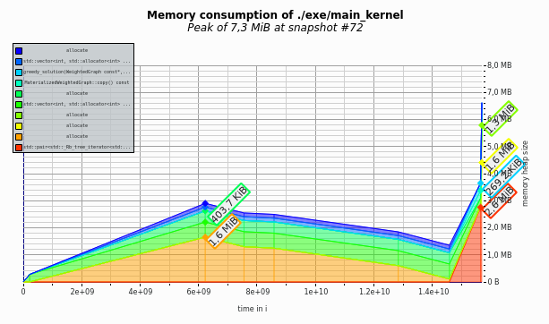
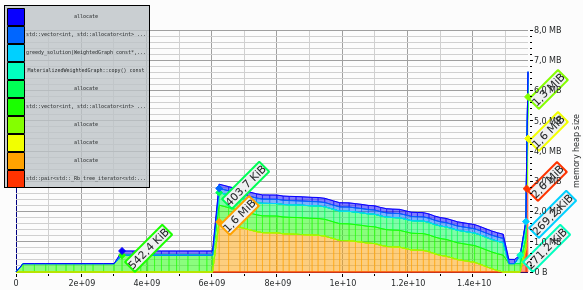
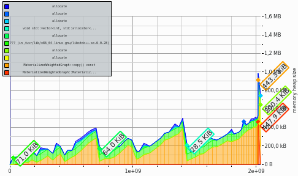
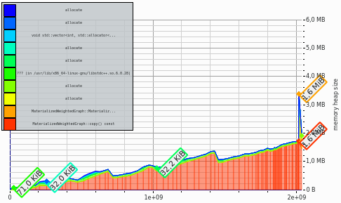

The valgrind program has many additional tools, one of which is called massif (manual here ↗).
We can call it using syntax similar to normal valgrind call.
valgrind --tool=massif ./a.out <input.txt
The command produces a file called massif.out.<number> where the number is bigger for later measurements.
This file can be visualized with massif-visualizer from https://github.com/KDE/massif-visualizer ↗.
massif-visualizer massif.out.<number>

valgrind --tool=massif --detailed-freq=1 ./a.out <input.txt

Seeing leaks
A leaking program will accumulate the used memory which will show in the graph as an ever-increasing mass of used memroy.
See the comparison of the same program: on the left there is a non-leaking program, and on the right, the leaking one.
By incpecting the ‘red’ element, we see what part of the program may be leaking.
In this case an instance created by the copy() method was not properly disposed of.
 